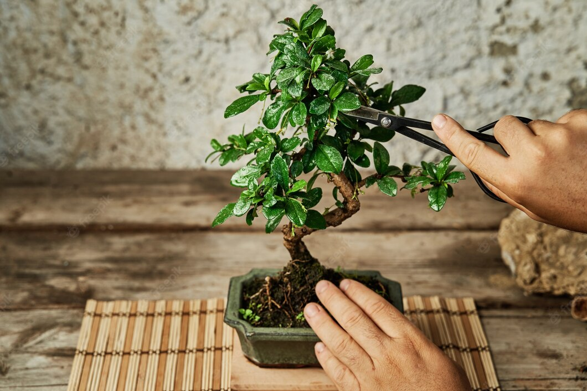

Bonsai Defoliation
What Is Defoliation?
Bonsai defoliation is simply the process of removing all, or some, of the leaves of a bonsai tree.

Bonsai defoliation is simply the process of removing all, or some, of the leaves of a bonsai tree.
We carry out the defoliation for the following purposes:
One of the main objectives of defoliation is to reduce the size of the leaves, in order to obtain more harmonious and proportional results, especially when working with small and medium-sized bonsai. As the defoliation is normally done in the summer, when the vigor of the sprouting is lower than in the spring, the leaves naturally develop smaller. After a few consecutive years, using the defoliation method, it is possible to obtain leaves with a size up to twenty times smaller than the size of the leaves of plants grown in the field, for example.
The increase in ramification of the branches is a result of the stimulation of dormant buds that are present in the leaf axils. When we remove the leaves, we directly stimulate the development of these buds and many of them turn into new and small branches. To increase the probability of these dormant buds to develop, we must eliminate the tip of the branch that was defoliated, as this will inhibit its apical growth, stimulating the development of shoots located in the inner part. Otherwise, if we don't eliminate the tip of the bud or branch, the growth force will go to its tip causing it to grow in extension, developing in this way, even larger leaves which will inhibit sprouting on the inside. We must remember that the greater the secondary and tertiary branching of the tree, the greater the tendency of this plant to produce smaller leaves.
We also use defoliation to favor growth in some areas of the plant, while restricting growth in other parts, in order to balance the development of the plant as a whole. If, for example, we want to thicken a branch of an Acer, when we perform the defoliation, we eliminate the leaves of the entire plant, except for the branch that we want to thicken, in this way, this region of the plant will continue to grow continuously, while the rest of the plant will remain with the growth stopped, until the new sprouting starts. It is very common to use this type of defoliation when we want to create a good taper in the trunk by adjusting the diameter of the apex when it is too thin in relation to the rest of the tree.
Defoliation in this case serves to improve the aesthetics of the tree, and is used in the case of trees with evergreen leaves, that is, that do not lose their leaves in autumn. Ficus in general are a good example, as they do not shed their leaves and normally at the end of winter they have a yellowish appearance. In these cases, it is very convenient to change all the leaves of the tree, to obtain new foliage.
This technique is generally applied from late spring to early summer, on deciduous bonsai and above all on healthy bonsai.
You cannot defoliate a weakened bonsai, the shock caused by the loss of leaves can end up killing the already weakened bonsai. It is also not recommended to defoliate a bonsai right after repotting, as in this case the bonsai needs its leaves more than ever to recover from it.
As we have already seen, we must wait for the beginning of spring to practice defoliation and the bonsai must be in good health and very vigorous, with well-formed leaves and not having undergone a repot a short time ago.
Here are some tools to use: